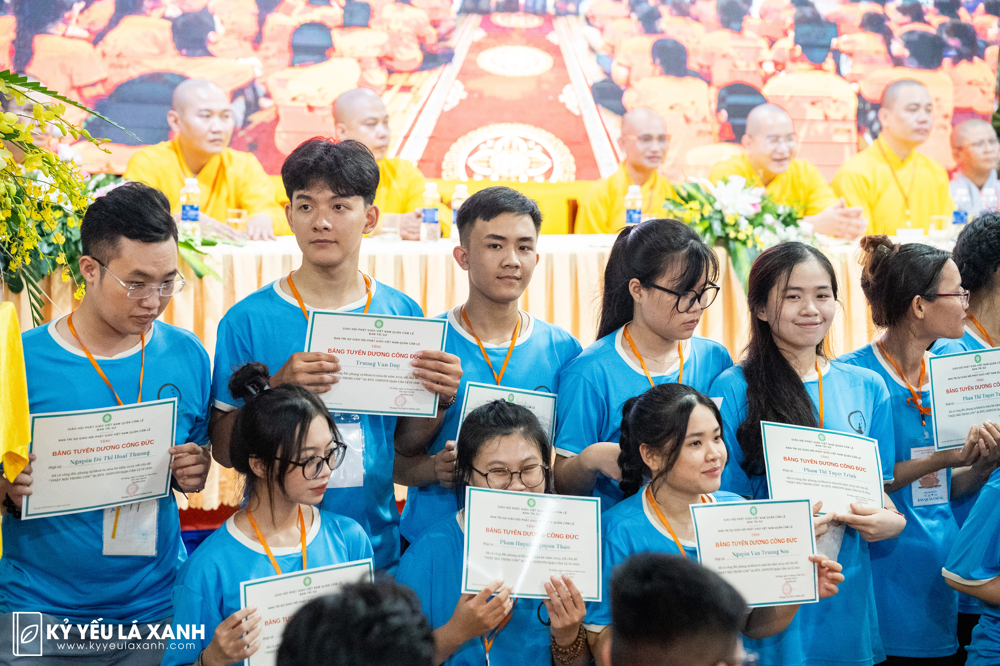
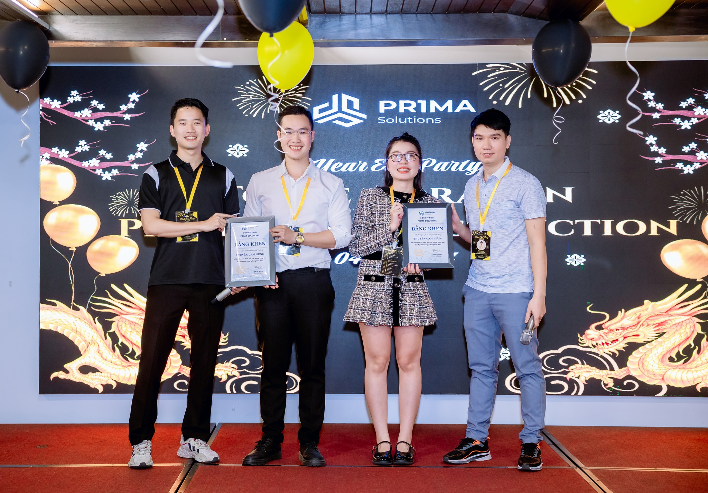
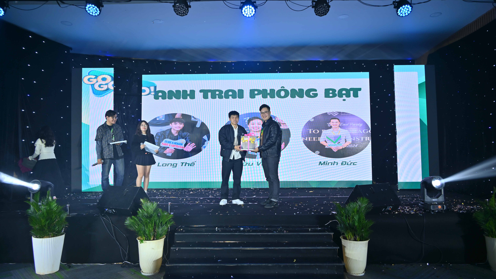

- From 06 Thich Thien Chieu Streets,Tho Quang Ward, Son Tra District, Da Nang City
- 18/09/1997
- THE UNIVERSITY OF DANANG - UNIVERSITY OF SCIENCE AND TECHNOLOGY
INTRODUCE MYSELT
My goals are to pursue my passion, which is to become a design engineer and look forastable long-term job. At the same time, I also want to find a place. where I havetheopportunity to dedicate myself, contribute capacity, knowledge, and ideas to helpthedevelopment of the company.EXPERIENCE
Developer Software Engineer
May 2023 to Present
Prima Solutions Company
Prima Solutions Company
As a Software Engineer at Prima Solutions, I developed and tested construction software. Key
contributions:
- Command AUTOCAD: Developed CAD software for a Japanese client using C++.
- Test Command: Wrote test cases for AutoCAD software.
- VinaCAD: Contributed to backend development of VinaCAD.
- Dynamic Block: Created dynamic blocks and Lisp scripts for AutoCAD.
- VinaBIM: Developing VinaBIM.
Intern
January 2023 - March 2023
IUS Co., Ltd. is a subsidiary company 楽天モバイルカスタマーサービス株式会社 and キャネット株式会社 in Japan
IUS Co., Ltd. is a subsidiary company 楽天モバイルカスタマーサービス株式会社 and キャネット株式会社 in Japan
Intern in C++ programming.
Student
Aug 2016 - May 2021
THE UNIVERSITY OF DANANG - UNIVERSITY OF SCIENCE AND TECHNOLOGY
THE UNIVERSITY OF DANANG - UNIVERSITY OF SCIENCE AND TECHNOLOGY
SHIPENGINEERING
Classification: Good.
Programming language C.
Matlab & simulink programming for engineers.
Classification: Good.
Programming language C.
Matlab & simulink programming for engineers.
Architectural Visualizer
May 2021 - April 2022
VACS VN
VACS VN
Architectural Visualizer
Use 3ds Max and V-Ray 5 to visualize Japanese architectural projects.
View Project on GitHub
Use 3ds Max and V-Ray 5 to visualize Japanese architectural projects.
View Project on GitHub
Student
April 2022 - January 2023
CODEGYM
CODEGYM
Full-stack web developer using JavaScript and Java, with experience in MySQL, Angular, Git, Linux, Agile, and writing Java unit tests.
Student
April 2022 - October 2022
MICROSOFT IT ACADEMY SOFTWARE DEVELOPMENT CENTER (SDC) THE UNIVERSITY OF DANANG
MICROSOFT IT ACADEMY SOFTWARE DEVELOPMENT CENTER (SDC) THE UNIVERSITY OF DANANG
Proficient in C++ with arrays, pointers, structures, and MFC technology for simple application development.
Student
August 2022 - March 2023
ITPLUS INSTITUTE OF INFORMATION TECHNOLOGY
ITPLUS INSTITUTE OF INFORMATION TECHNOLOGY
Skilled in C# and game development using Unity, with expertise in animation, character control, collisions, and publishing games to App Store and Google Play.
SKILLS
- HTML, CSS, Bootstrap
- JavaScript, TypeScript
- C++, C#, Java
- MySQL, Git
- 3ds Max, AutoCAD, Vray5
- Open Design Alliance (ODA), ObjectARX for AutoCAD SDK, Microsoft API
PROJECTS
Academic Projects (Before May 2023)
Website AXIT
03/04/2023 - 10/04/2023
- Website: trinhminhduc9x.github.io/AXIT
Team size: One
Technologies: HTML, JavaScript, Bootstrap
My role: Front-end Developer
Technologies: HTML, JavaScript, Bootstrap
My role: Front-end Developer
Airplane Shooting Game & Flappy Bird Game
16/09/2022 - 14/10/2022
- Game 1: trinhminhduc9x.github.io/AIRPLANE_SHOOTING_GAME
- Game 2: trinhminhduc9x.github.io/FLAPPY_BIRD
- Game 2: trinhminhduc9x.github.io/FLAPPY_BIRD
Team size: One
Technologies: C#, Unity Framework, Animation, Character Control
My role: Game Developer
Technologies: C#, Unity Framework, Animation, Character Control
My role: Game Developer
Created two games using Unity.
Website Furama
01/12/2022 - 31/12/2022
- Website: trinhminhduc9x.github.io/FURAMA
Team size: One
Technologies: Java, HTML, Bootstrap, JavaScript, MySQL, Spring Boot
My role: Full-stack Developer
Technologies: Java, HTML, Bootstrap, JavaScript, MySQL, Spring Boot
My role: Full-stack Developer
Created a travel booking website for Furama Resort.
Real Estate Website
09/12/2022 - 14/01/2023
- Website: trinhminhduc9x.github.io/REAL_ESTATE
Team size: 15 members
Technologies: Java, HTML, Bootstrap, JavaScript, MySQL, Spring Boot
My role: Full-stack Developer
Technologies: Java, HTML, Bootstrap, JavaScript, MySQL, Spring Boot
My role: Full-stack Developer
Developed a real estate website with features like user registration and property management.
Company Projects
Command AUTOCAD
15/05/2023 - 31/12/2023
Team size: Three
Technologies: C++
My role: Developer
Technologies: C++
My role: Developer
Contributed to the development of CAD software for a Japanese client.
Test Command
01/01/2024 - 04/09/2024
Team size: Three
My role: Tester (Key Member - Requested by Client)
My role: Tester (Key Member - Requested by Client)
Wrote test cases and tested AutoCAD-based software to ensure proper functionality.
VinaCAD
01/01/2024 - 04/09/2024
- Website: vina-cad.com
Team size: Six
My role: Backend Developer
My role: Backend Developer
Mentor:
- Intern 1 - Promoted to Fresher Developer
- Intern 2 - Supported Quality Assurance
- Intern 3 - Supported Quality Assurance
Developed the VinaCAD software, a tool for CAD professionals.
Dynamic Block
04/09/2024 - 31/12/2024
Team size: One
My role: Developer (AutoCAD Drafting Staff and Technical Representative)
My role: Developer (AutoCAD Drafting Staff and Technical Representative)
Developed dynamic blocks for AutoCAD and created Lisp software for automatic drawing verification. Also
worked as the company's technical representative when collaborating with freelancers.
VinaBIM
04/09/2024 - Present
Team size: One
My role: Developer
My role: Developer
Currently working on VinaBIM software, a BIM tool for the construction industry.
EXTRACURRICULAR ACTIVITIES
Volunteer - Community Activities in Da Nang
March 2022 - Present
Location: Da Nang, Vietnam

Participate in various volunteer activities within Da Nang city, including supporting local events,
helping underprivileged communities, and promoting social welfare programs.
Member - Faculty Youth Union Activities
September 2018 - May 2021
THE UNIVERSITY OF DANANG - UNIVERSITY OF SCIENCE AND TECHNOLOGY
Participate in various youth union activities, including organizing events, volunteering, and engaging
in community service projects. Worked with the faculty youth union to promote social and academic
development for students.
Awards
Inspirational Employee of the Year - Prima Solutions
December 2023

Prima Solutions Company
Recognized as the Inspirational Employee of the Year for motivating and uplifting the team, fostering a
positive work environment, and leading by example in achieving the company's goals.
Brother of Laughter and Positivity Award - Prima Solutions
January 2025

SkyACE Corporation
Honored with the Brother of Laughter and Positivity Award for consistently creating a lively and fun work environment, lifting team morale with humor, and being a source of joy and camaraderie in the workplace.